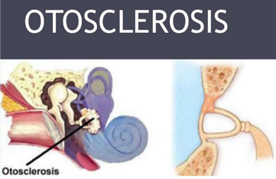

Information for
What is Otosclerosis?
Otosclerosis is a condition that prevents sound vibrations effectively being transmitted from the smallest bone in the body, (Stapes), to the inner ear, causing hearing loss
